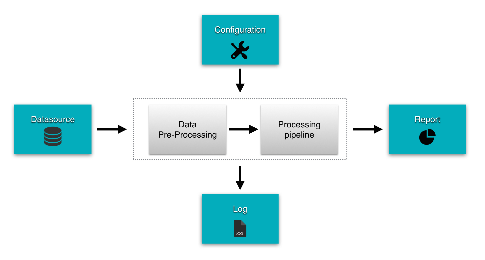

This section will give you both a high level and a detailed view of Easy Batch's internals.
The next figure describes Easy Batch from a 10000 foot view:
Easy Batch is all about processing a data source in batch mode. You can configure its behavior in many ways.
At the end of execution, the engine gives you a report with several metrics and statistics as well as a detailed log file about the job execution.
Let's zoom in to see a bit more details about Easy Batch's internals:

Data read from the data source is first submitted to a pre-processing phase. Here, data is:
After this pre-processing stage, the data is ready to be processed quietly. It is then submitted to a processing pipeline where successive operations are performed on it.
Let's zoom in to the third level. The next figure describes Easy Batch's main components and gives you an overview of the framework's architecture:

Easy Batch processes data record by record. Depending on the data source type, a record can be a line in a flat file, a row in database, a tag in a XML file, a file in a folder, etc. The main components of the processing engine are:
All these components are optional. Easy Batch provides a No Operation implementation for each component. You can find all details about these components in the user guide.
You can extend this workflow by registering custom listeners to do pre/post processing before and after each step.
At the end of execution, you get a report containing several metrics and statistics. Easy Batch also gives you a detailed log about what happened in case of failure in any of these steps.
When a record survives the pre-processing phase, it enters the processing pipeline where it is submitted to a chain of processors:

Record type can change from one processor to another. When all the processing pipeline has been applied, the engine moves to the next record.
The workflow used internally by Easy Batch is illustrated by the next figure and described below: